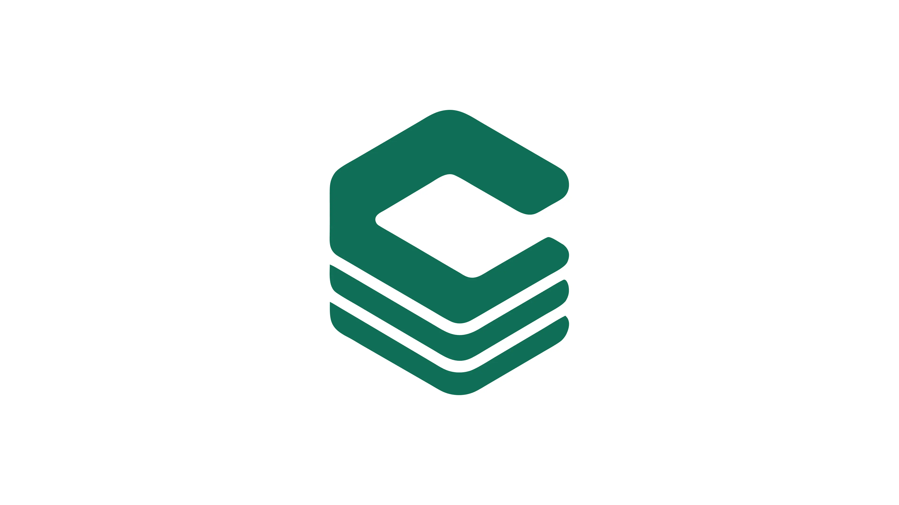

В проде
Мониторинг 2.0
Внутренний инструмент для отслеживания актуальности нормативной базы учебных продуктов. До него эксперты держали по десятку открытых вкладок в Консультант+ и на сайтах ведомств, а изменения отслеживали вручную.
Смотреть кейс →